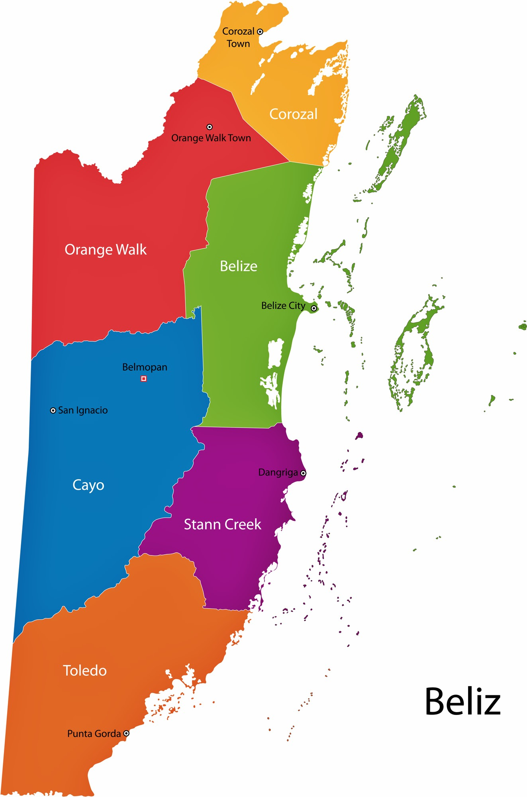
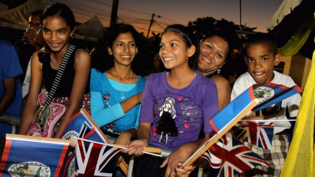
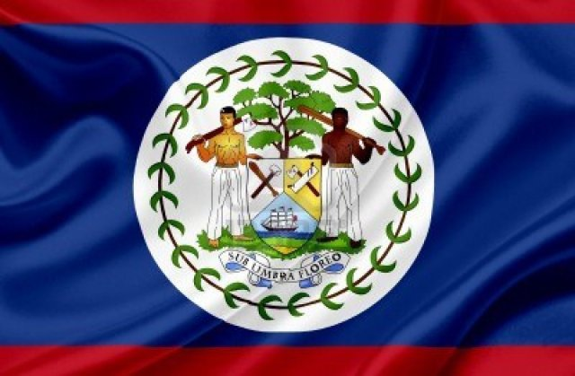
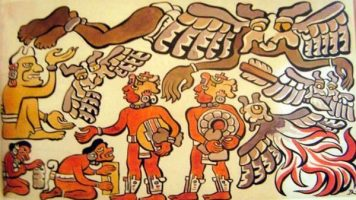
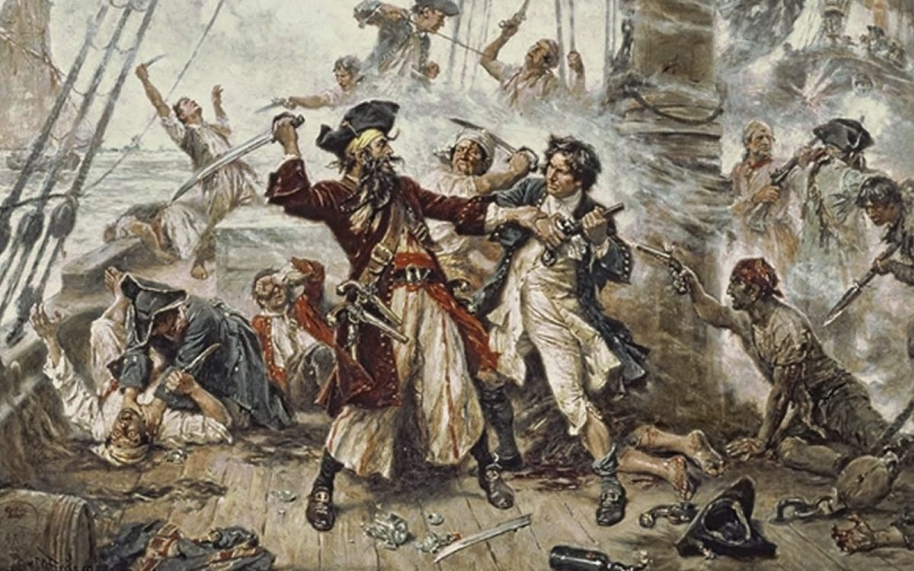
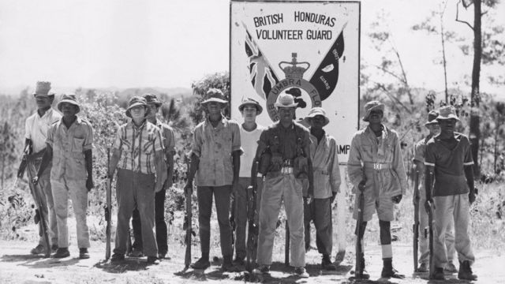
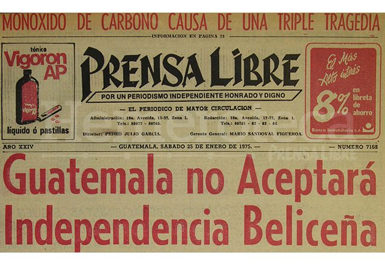
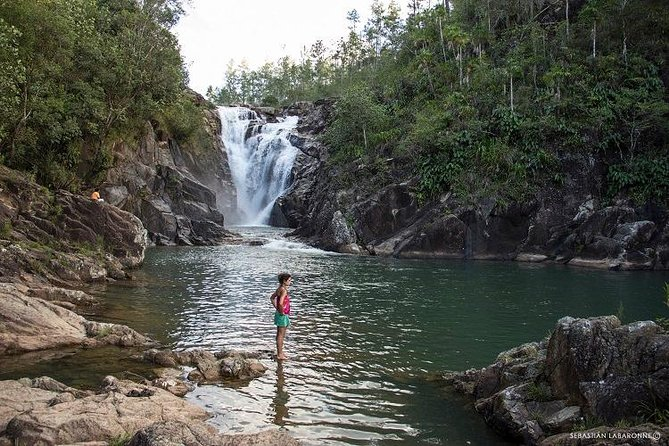

Belice es un país soberano de América ubicado en el extremo noreste de Centroamérica. Es el único país de América Central cuya forma de gobierno está organizada en una monarquía constitucional parlamentaria, donde la reina Isabel II funge como jefa de Estado y es representada en el país por un gobernador general. La capital es la ciudad de Belmopán y la ciudad más poblada es la Ciudad de Belice.Belice tiene un área de 22,800 km2.
 Belice tiene una población de 387,879 habitantes.
 BANDERA DE BELICE
 HISTORIA: Época Precolombina: Belice fue parte del área cultural maya, que se extendía desde el sur de México hasta Guatemala y Honduras. El centro político y cultural más importante de la región era el sitio conocido en la actualidad como El Caracol. Época Virreinal española: Los conquistadores españoles exploraron la región a partir de 1519, la incorporaron a la Corona de Castilla y el territorio pasó a ser parte de la capitanía General de Guatemala, si bien optaron por no colonizarla debido a la falta de recursos como el oro y la fuerte defensa de la península de Yucatán por los mayas. En el siglo XVII, marinos ingleses navegaron por la zona dedicándose a la piratería y a la tala del palo de Campeche para la producción de tinte. El tratado de Madrid de 1670 puso fin a los ataques piratas, con lo que los ingleses se concentraron en cortar palo de Campeche. Con la madera se producía un agente de fijación para los tintes de ropa que era vital para la industria lanar europea. España otorgó licencia de ocupar el área a los colonos británicos a condición de que cesaran los actos de piratería. En 1716 unos taladores británicos expulsados por los españoles de la bahía de Campeche se instalaron en la región del río Belice. A lo largo del siglo XVIII españoles y británicos intercambiaron ataques cada vez que se declaraba la guerra entre las dos potencias. Un ejemplo es la batalla del Cayo San Jorge, del 10 de septiembre de 1798. El aniversario de esta batalla ha sido declarado fiesta nacional de Belice. Los británicos esperaron hasta el año 1789 para nombrar el primer superintendente del territorio de Belice. Anteriormente, el gobierno británico no reconoció el asentamiento de Belice como una colonia, por temor a provocar un ataque español ya que el territorio pertenecía formalmente a España. La falta de implicación del gobierno británico permitió a los colonos el establecimiento de sus propias leyes y formas de gobierno. Durante este tiempo unos pocos colonos ricos ganaron el control de la legislatura local, conocida como Public Meeting ("Reunión Pública"), así como de la mayor parte de las tierras y madera. Colonia Británica: El dominio nominal de España sobre Belice terminó con las guerras de independencia hispanoamericanas, a principios del siglo XIX. En el siglo XIX, los británicos ejercieron un mayor control sobre los colonos, amenazando con la suspensión del Public Meeting a menos que se observaran las instrucciones del gobierno con respecto a la abolición de la esclavitud. Aunque la esclavitud fue abolida en 1838 en el Imperio británico, las condiciones de trabajo de los trabajadores en la colonia de Belice eran denigrantes. En 1836 los británicos reclamaron el derecho de administrar el territorio de Belice, pero las Provincias Unidas de América Central se negaron. Como consecuencia, los británicos pactaron con México la explotación de madera y tintes. Los británicos, por consiguiente, comenzaron a invadir el territorio de Guatemala, con la excusa de que tenían derechos sobre este. Sin embargo, los británicos habían acordado con los españoles explotar recursos hasta el río Sibum, pero con el paso del tiempo, fueron tomando más territorio hasta llegar cerca de Izabal (departamento de Guatemala) y en 1862, el Reino Unido lo declaró formalmente como una colonia de la Corona británica, subordinada a Jamaica, bautizada con el nombre de Honduras Británica (en inglés: British Honduras). Independencia: Las reformas constitucionales se iniciaron en 1954 y dieron lugar a una nueva Constitución diez años más tarde. Gran Bretaña concedió a la Honduras Británica el autogobierno en 1964, y el líder del PUP, George Price, se convirtió en primer ministro de la colonia. La Honduras Británica fue rebautizada oficialmente como "Belize" en 1973. El progreso hacia la independencia, sin embargo, se vio obstaculizado por una reclamación guatemalteca de soberanía del territorio. Belice, finalmente, alcanzó la plena independencia el 21 de septiembre de 1981, aunque Guatemala se negó a reconocer a la nueva nación. Unos 1500 soldados británicos se quedaron para proteger Belice de la amenaza guatemalteca. Diferiendo Territorial con Guatemala: A lo largo de la historia de Belice, Guatemala ha reclamado la soberanía sobre la totalidad o parte del territorio. Esta afirmación se refleja en ocasiones en mapas que muestran a Belice como parte de Guatemala. Aproximadamente un 53,45 % del territorio beliceño es reclamado por Guatemala. La disputa se inició en 1859, a partir de la firma del Acuerdo anglo-guatemalteco de 1859. GEOGRAFÍA: Belice está situada en la costa caribeña del norte de Centroamérica. Comparte frontera al norte con el estado mexicano de Quintana Roo, al oeste con el departamento guatemalteco de Petén, y al sur con el río Sibún. Al este del mar Caribe se encuentra la segunda barrera de arrecifes más larga del mundo. DISTRITOS QUE LA COMPONEN: